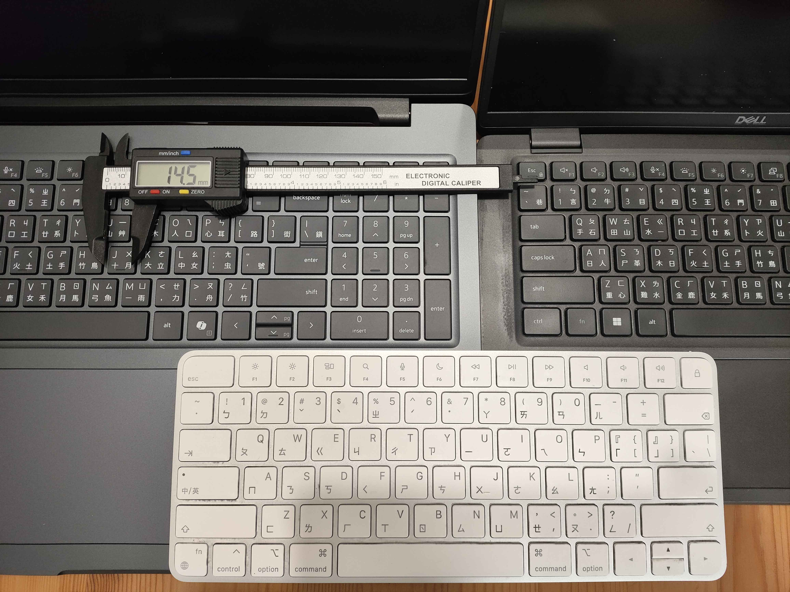
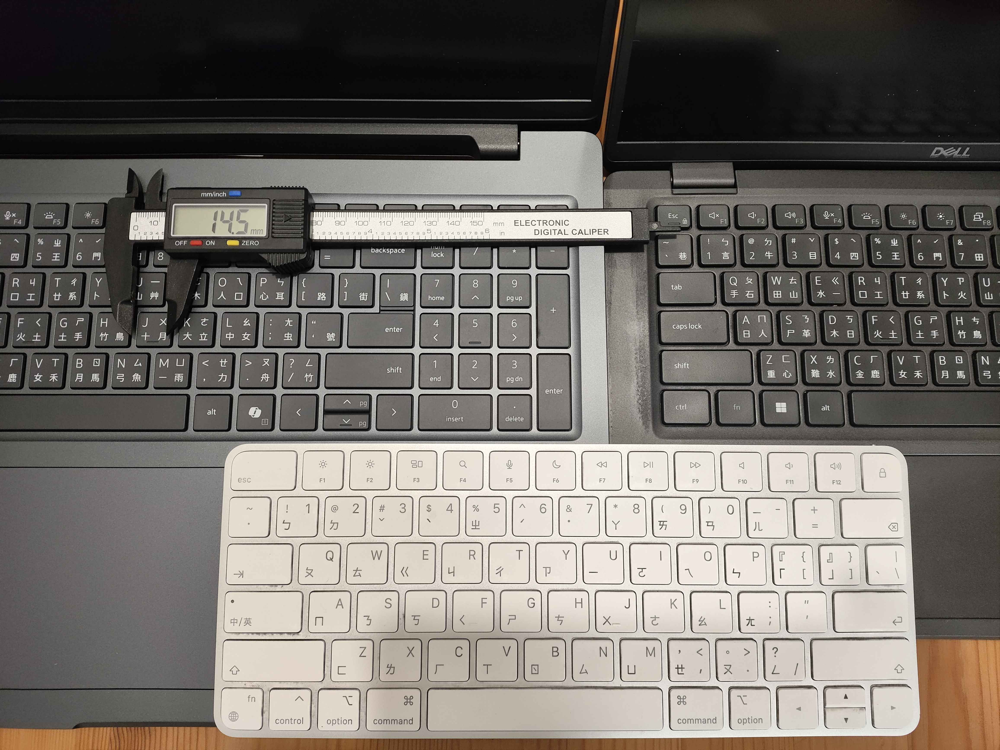

圖：DELL Pro Max 16 (MC16250) 外觀主視覺
產品定位與測試環境
DELL Pro Max 16 (MC16250)，16 吋筆記型電腦，定位在商務與開發者之間。結合卓越效能與大型顯示器，專為辦公室內或需要外出的進階使用者與輕量級設計應用程式所設計。
本次開箱的機種配置為 Intel Core Ultra 7 255H 處理器並具備 Intel AI Boost NPU，以及 NVIDIA RTX PRO 1000 Blackwell 獨顯晶片，搭配 64GB DDR5 記憶體與 2TB SSD（另加裝 1TB SSD，分別安裝 Windows 11 Pro 與 Ubuntu 24.04）。
外觀介紹與規格選配
1.DELL Pro Max 16外觀帶給人第一印象就是沉重、樸實。上蓋16吋螢幕開啟很扎實，顯示螢幕規格是非觸控FHD+。
2.具備數字鍵的完整尺寸鍵盤與大型觸控板。
3.筆電尾端連接是螢幕與轉軸。
4.底部具備散熱進氣孔，拆機需透過9顆底板的螺絲。
顯示規格與選項
具備 FHD+ 顯示器（1920x1200 / 60Hz）可選配觸控，或選配高階 QHD+ (2560x1600 / 120Hz)。
Dell Pro Max 16 MC16250 內建Intel Arc顯示卡且支援的獨立式圖形處理器 (GPU) 規格可選配種類如下：
| GPU 選配型號 | 記憶體大小 | 記憶體類型 |
|---|---|---|
| NVIDIA RTX Pro 500 Blackwell | 6 GB | GDDR7 |
| NVIDIA RTX Pro 1000 Blackwell | 8 GB | GDDR7 |
| NVIDIA RTX Pro 2000 Blackwell | 8 GB | GDDR7 |
老編工程師在選擇筆記型電腦時對螢幕有一個奇怪的喜好就是上蓋螢幕要能夠接近或完全打平。
散熱
筆電底部開孔是冷空氣進氣，透過內部散熱機構與再個風扇，從轉軸機構的空隙排出熱氣
鍵盤
鍵盤觸感回饋明顯，需稍作適應；鍵帽略小於一般設計。打字時穩定度良好，觸控板寬大順滑。（以APPLE巧控鍵盤為對照基準）圖左為DELL PRO MAX 16 ，圖中白色為（APPLE巧控鍵盤），圖右為2022 DELL Latitude 7430 14吋筆電

 

重量
筆記型電腦電源線-米老鼠頭（IEC 60320 C5 接頭）輸入電源供應器，130 W Type C接頭提供充電使用，筆記型電腦電源線整組473克重量很有傷力，搭配重量2300克的筆電主體防禦力應該很夠，建議外出時用好一點的雙肩筆電後背包(推薦搭配DELL Alienware外星人背包)；如果外出不想帶大顆的130W另外實測65W Type C充電器可以用，會自動偵測到慢速充電。
機身左右側連接埠
1. 機身左側的兩個Type-C Thunderbolt 4 (40 Gbps) 連接埠 (具備 Power Delivery 功能和 DisplayPort)
2. 機身右側提供通用音訊連接埠(3.5mm有線耳機接孔)與RJ-45 乙太網路 (1 Gbps)，USB 3.2 Gen 1 (5 Gbps) 連接埠 (具備 PowerShare 功能)
內部節構
打開底板機身內部擴充，針對內部儲存M.2 SSD 依據規格表目前可安裝容量2TB * 2 且可設定RAID或者兩個SSD各自獨立使用。
厚度
實機規格摘要
| 模組 | 說明 |
|---|---|
| Processor | Intel Core Ultra 7 255H, 16 cores / 24MB cache, up to 5.1GHz |
| Graphics | NVIDIA RTX PRO 1000 Blackwell 8GB GDDR7 |
| Memory | 64GB DDR5 6400MHz (2x32GB) |
| Storage | 2TB PCIe Gen4 SSD + 額外加裝1TB SSD |
| Display | 16" FHD+ 300 nits, Non-touch |
| Battery | 96Whr ExpressCharge 長效電池 |
| Wireless | Intel Wi-Fi 6E AX211, Bluetooth 5.3 |
| Operating System | Windows 11 Pro |
系統效能測試
系統資訊以 CPU-Z、GPU-Z、Cinebench、3DMark、CrystalDiskMark 呈現。
圖：系統資訊-CINEBENCH 跑分（CPU）
圖：系統資訊-NVIDIA控制面板
Passmark PerformanceTest跑分，Dassault Systèmes - SolidWorks Corporation Hardware Benchmarks 相關效能測試是一款第三方商業硬體基準測試工具，它可以測試您的系統並允許您將其與其他系統進行比較。

3DMARK DEMO Steel Nomad(已安裝 1.0) 適用於高階遊戲電腦的基準測試
圖：3DMARK跑分
UNIGINE Engine Superposition benchmark顯卡效能測試軟體
圖：CrystalDiskMark磁碟IO讀寫跑分
雙作業系統安裝
DELL Pro Max 16 (MC16250) 搭載 NVIDIA RTX 1000 Ada Generation 的筆電，運行Ubuntu 24.04 作業系統，適合進行多種 AI GPU 相關微型運算測試作業，第二個SSD是安裝Ubuntu 24.04 Desktop透過開機F12切換不同開機碟作業系統。
圖：BIOS系統畫面
圖：Ubuntu nvidia-smi資訊
在Ubuntu試跑FurMark甜甜圈風扇高速運作噪音溫度量測值記錄
圖：全速噪音值
結語
對於 AI 開發者、內容創作者與系統工程師來說，DELL Pro Max 16 提供高效能、多系統兼容與優異的擴充能力。 若你的工作同時涉及模型訓練、影像剪輯與企業維運，它會是兼具行動力與穩定性的最佳選擇。 對於選購獨顯筆記型電腦的考量，電竸機種或工作站獨顯筆電，要有大容量儲存SSD大於2TB或雙SSD，64G記憶體，連接埠不能太少，DELL Pro Max 16 (MC16250)不是最強但一定合規。
設備好貴怕意外損外嗎?對於企業或使用者還可另外加購到最高5年硬體保固服務與意外損壞保護服務Prosupport Plus and Accidental Damage Service。 身為網路、伺服器、儲存設備、虛擬化、超融合、資料備份保護、容器化架構管理、AI基礎架構規劃與管理、系統與開發並行的影片創作者在選筆電時最重視的是「穩定性」、「擴充性」與「效能」。或者繪圖工作站筆電等類型的設計工作 DELL Pro Max 16 (MC16250) 是絕佳適合機種。
圖：DELL Pro MAX 行動工作站系列產品


DELL PRO MAX 16 MC16250 開箱影片 (點擊圖片前往Youtube看影片)